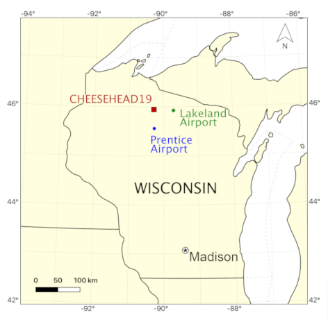

Peer-Reviewed Publications
 Butterworth, B. J., A. R. Desai, S. Metzger, P. A. Townsend, M. D. Schwartz, G. W. Petty, M. Mauder, H. Vogelmann, C. G. Andresen,
T. J. Augustine, T. H. Bertram, W. O. J. Brown, M. Buban, P. Cleary, D. J. Durden, C. R. Florian, T. J. Iglinski, E. L. Kruger,
K. Lantz, T. R. Lee, T. P. Meyers, J. K. Mineau, E. R. Olson, S. P. Oncley, S. Paleri, R. A. Pertzborn, C. Pettersen, D. M. Plummer,
L. Riihimaki, E. Ruiz Guzman, J. Sedlar, E. N. Smith, J. Speidel, P. C. Stoy, M. Sühring, J. E. Thom, D. D. Turner, M. P. Vermeuel, T. J. Wagner,
Z. Wang, L. Wanner, L. D. White, J. M. Wilczak, D. B. Wright, and T. Zheng, 2020:
Connecting Land-Atmosphere Interactions to Surface Heterogeneity in CHEESEHEAD19.
Butterworth, B. J., A. R. Desai, S. Metzger, P. A. Townsend, M. D. Schwartz, G. W. Petty, M. Mauder, H. Vogelmann, C. G. Andresen,
T. J. Augustine, T. H. Bertram, W. O. J. Brown, M. Buban, P. Cleary, D. J. Durden, C. R. Florian, T. J. Iglinski, E. L. Kruger,
K. Lantz, T. R. Lee, T. P. Meyers, J. K. Mineau, E. R. Olson, S. P. Oncley, S. Paleri, R. A. Pertzborn, C. Pettersen, D. M. Plummer,
L. Riihimaki, E. Ruiz Guzman, J. Sedlar, E. N. Smith, J. Speidel, P. C. Stoy, M. Sühring, J. E. Thom, D. D. Turner, M. P. Vermeuel, T. J. Wagner,
Z. Wang, L. Wanner, L. D. White, J. M. Wilczak, D. B. Wright, and T. Zheng, 2020:
Connecting Land-Atmosphere Interactions to Surface Heterogeneity in CHEESEHEAD19.
Bulletin of the American Meteorological Society, #BAMS-D-19-0346, in press.
Early Online Release

Duke, P. J., B. G. T. Else, S. Jones, S. Marriot, M. Ahmed, V. Nandan, B. J. Butterworth, S. Gonski, R. Dewey, L. Miller, K. Simpson, and H. Thomas, 2020: Seasonal Marine Carbon System Processes in an Arctic Coastal Landfast Sea Ice Environment Using an Innovative Underwater Sensor Platform. Elementa: Science of the Anthropocene, #ELEMENTA-D-20- 00103R1, accepted.
Butterworth, B. J. and B. G. T. Else, 2018: Dried, closed-path eddy covariance method for measuring carbon dioxide flux over sea ice. Atmospheric Measurement Techniques, 11, 6075–6090, https://doi.org/10.5194/amt-11-6075-2018

Butterworth, B. J., and S. D. Miller, 2016: Air-sea exchange of carbon dioxide in the Southern Ocean and Antarctic marginal ice zone. Geophysical Research Letters, 43, 7223–7230, https://doi.org/10.1002/2016GL069581

Butterworth, B. J. and S. D. Miller, 2016: Automated Underway Eddy Covariance System for Air–Sea Momentum, Heat, and CO2 Fluxes in the Southern Ocean. Journal of Atmospheric and Oceanic Technology, 33, 635–652, https://doi.org/10.1175/JTECH-D-15-0156.1

Hough-Goldstein, J., M. Schiff, E. Lake and B. Butterworth, 2008: Impact of the biological control agent Rhinoncomimus latipes (Coleoptera : Curculionidae) on mile-a-minute weed, Persicaria perfoliata, in field cages. Biological Control, 46, 417–423, https://doi.org/10.1016/j.biocontrol.2008.04.001
Manuscripts Under Review
Ahmed, M. M. M., B. G. T. Else, B. J. Butterworth, D. W. Capelle, C. Guéguen, L. A. Miller, C. Meilleur, and T. Papakyriakou, 2020: Widespread surface water pCO2 undersaturation during ice melt season in an Arctic continental shelf sea (Hudson Bay, Canada). Elementa: Science of the Anthropocene, #ELEMENTA-D-20-00130, revising.
Helbig, M., T. Gerken, E. Beamesderfer, D. D. Baldocchi, T. Banerjee, S. C. Biraud, W. O. J. Brown, N. A. Brunsell, E. A. Burakowski, S. P. Burns, B. J. Butterworth, W. S. Chan, K. J. Davis, A. R. Desai, J. D. Fuentes, D. Y. Hollinger, N. Kljun, M. Mauder, K. A. Novick, J. M. Perkins, D. A. Rahn, C. Rey-Sanchez, J. A. Santanello, R. L. Scott, B. Seyednasrollah, P. C. Stoy, R. C. Sullivan, J. V.-G. de Arellano, S. Wharton, C. Yi, and A. D. Richardson, 2020: Integrating continuous atmospheric boundary layer and tower-based flux measurements to advance understanding of land-atmosphere interactions. Agricultural and Forest Meteorology, #AGFORMET-S-20-01618, revising.
Metzger S., D. Durden, S. Paleri, M. Sühring, B. J. Butterworth, C. Florian, M. Mauder, D. M. Plummer, L. Wanner, K. Xu, and A. R. Desai, 2021: Observing System Simulation Experiments double scientific return of surface-atmosphere synthesis. Atmospheric Measurement Techniques, submitted. (preprint: https://www.essoar.org/doi/abs/10.1002/essoar.10505931.1)
Other Publications
Paleri, S., B. J. Butterworth, and A. R. Desai: Spatial Patterns and Scales. Conceptual Boundary Layer Meteorology: The Air Near Here, A.L. Hiscox and A.G. McCombs, Eds., Elsevier, submitted. [book chapter]
Helbig, M., T. Gerken, E. Beamesderfer, D. D. Baldocchi, T. Banerjee, S. C. Biraud, W. O. J. Brown, N. A. Brunsell, S. P. Burns, B. J. Butterworth, W. S. Chan, A. R. Desai, J. D. Fuentes, D. Y. Hollinger, N. Kljun, M. Mauder, K. A. Novick, J. M. Perkins, C. Rey-Sanchez, R. L. Scott, B. Seyednasrollah, P. C. Stoy, R. C. Sullivan, J. V.-G. de Arellano, S. Wharton, C. Yi, and A. D. Richardson: Whitepaper: Understanding land-atmosphere interactions through tower-based flux and continuous atmospheric boundary layer measurements, AmeriFlux Management Project, 47 pp., 2020. [white paper]
Published Datasets

Miller, S. and B. Butterworth, (2016). Eddy covariance air-sea momentum, heat, and carbon dioxide fluxes in the Southern Ocean from the Nathaniel B. Palmer (cruise NBP1210). Integrated Earth Data Applications (IEDA). doi: http://dx.doi.org/10.1594/IEDA/323564
Miller, S. and B. Butterworth, (2016). Eddy covariance air-sea momentum, heat, and carbon dioxide fluxes in the Southern Ocean from the Nathaniel B. Palmer (cruise NBP1402). Integrated Earth Data Applications (IEDA). doi: http://dx.doi.org/10.1594/IEDA/323565
 Desai, A. R., B. J. Butterworth, S. P. Oncley, (2019), CHEESEHEAD Datasets:
AmeriFlux, US-PFb, NW1, Pine-1, https://doi.org/10.17190/AMF/1717850
AmeriFlux, US-PFc, NW2, Aspen-1, https://doi.org/10.17190/AMF/1717851
AmeriFlux, US-PFd, NW3, Tussock-1, https://doi.org/10.17190/AMF/1717852
AmeriFlux, US-PFe, NW4, Lake-1, https://doi.org/10.17190/AMF/1717853
AmeriFlux, US-PFg, NE1, Pine-2, https://doi.org/10.17190/AMF/1717854
AmeriFlux, US-PFh, NE2, Pine-3, https://doi.org/10.17190/AMF/1717855
AmeriFlux, US-PFi, NE3, Hardwood-1, https://doi.org/10.17190/AMF/1717856
AmeriFlux, US-PFj, NE4, Maple-1, https://doi.org/10.17190/AMF/1717857
AmeriFlux, US-PFk, SW1, Aspen-2, https://doi.org/10.17190/AMF/1717858
AmeriFlux, US-PFL, SW2, Aspen-3, https://doi.org/10.17190/AMF/1717859
AmeriFlux, US-PFm, SW3, Hardwood-2, https://doi.org/10.17190/AMF/1717860
AmeriFlux, US-PFn, SW4, Hardwood-3, https://doi.org/10.17190/AMF/1717861
AmeriFlux, US-PFp, SE2, Hardwood-4, https://doi.org/10.17190/AMF/1717862
AmeriFlux, US-PFq, SE3, Aspen-4, https://doi.org/10.17190/AMF/1717863
AmeriFlux, US-PFr, SE4, Tussock-2, https://doi.org/10.17190/AMF/1717864
AmeriFlux, US-PFs, SE5, Aspen-5, https://doi.org/10.17190/AMF/1717865
AmeriFlux, US-PFt, SE6, Pine-4, https://doi.org/10.17190/AMF/1717866
Theses
2016 - Air-Sea Carbon Dioxide Exchange in the Southern Ocean and Antarctic Sea Ice Zone